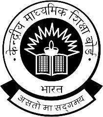

“We live in deeds, not years ; in thoughts not breaths ;
He most lives who thinks most, feels the noblest, acts the best ”..
Dr. Rajakumar’s life is an example of a great man who is still living through his noble deeds. Dr. Rajakumar, an institution by himself was an educationist, journalist, administrator, evangelist and a visionary. He was a great man of God. He transformed millions of lives who came in touch with him.
Dr. Rajakumar was born on 23rd July 1933 to Dr. Gnaniah and Mrs. Annabakiam Ammal. He completed his formal education and joined the government service in the statistical department. He married our chairperson Mrs. Sakuntala who was a teacher by profession.
As Sir Philip Sydney says, “In the truly great, virtue governs with a Sceptre of knowledge and wisdom”.
Our beloved Founder Chairman Dr. Rajakumar was a man of noble character. He always insisted on perfection in every activity. He was a gentleman with a magnanimous heart. He was known for his humility, philanthropy, punctuality, courage, honesty, dedication and devotion.
In the 1970’s the schools around Mandaveli catered to the needs of the elite. Dr. Rajakumar wanted to change this scenario and bring light of knowledge to the middle-class people. Dr. Rajakumar started a small school in a thatched roof. The seed which he had sown has grown into a huge banyan tree sheltering seven educational institutions – nurturing the young minds with holistic education.
“Faith moves mountains”. Dr. Rajakumar had immense faith in God. His strong belief in God enabled him to progress and prosper in his life.
“The true measure of loving God is to love Him without measure”. Dr. Rajakumar expressed his love for His Creator by building churches to enrich the spiritual lives of millions.This legendary figure had devoted his entire life for the cause of education and the upliftment of the downtrodden.
“As long as the moon shall rise,
As long as the river shall flow,
As long as the sun shall shine,
As long as the grass shall grow”
Rt. Rev. Dr. Rajakumar will be remembered forever by everyone.
About SJET
About Saint John's Educational Trust (SJET)
St. John’s English School & Junior College was founded in the academic year 1981 and is managed by
Saint John’s Educational Trust, a registered Trust for educational and charitable purposes.
Saint John’s Educational Trust is funding and running seven reputed Educational Institutions of which three
are affiliated to the Central Board of Secondary Education, New Delhi and four are affiliated to the State
Education Department, Government of Tamil Nadu.
1. To establish, found, organise, start, promote, construct, maintain, run, develop and improve educational institutions such as Primary and Elementary Schools, Secondary or Higher Grade Schools, Colleges, Polytechnics, Residential Schools, Balwadis, Research Institutes, Scientific, Cultural, Art, Technical or Vocational Training Institutions, Hostels etc., for students, without distinction of caste, creed or religion.
2. To promote spiritual, emotional, cultural, literary and scientific progress of all, specially the student community
Members of School Managing Committee:
1.Correspondent & Principal - Mrs. Anitha Edison
2.Vice Principal - Mrs. Anitha Rajakumar
3.Headmistress - Mrs. Elizabeth Sekar
4.Headmistress - Mrs. Ruthchandravadani
Our Motto
Wisdom is better than Rubies
Education is what ultimately remains after one has forgotten all that one learnt in Schools and Colleges. The motto of St. John’s aims at imparting wisdom – the ability to think and utilise knowledge, experience, understanding, common sense and insight.
Our motto will be a motivating impulse, taking each student on a quest for knowledge, instilling in them passion for discovery, an urge to go beyond the frontiers of the unknown.
The idea is to see that Education is not a cliche-ridden concept entering around class-room conditioning. Each student with the wisdom gained is a discoverer exploring the world around him and coming to terms with life, as it unfolds in all its complexities.
Vision
“We live in deeds, not years ; in thoughts not breaths ;
He most lives who thinks most, feels the noblest, acts the best ”.
To establish, found, organise, start, promote, construct, maintain, run, develop and improve educational insitutions such as Primary and Elementary Schools, Secondary or Higher Grade Schools, Colleges, Polytechnics, Residential Schools, Balwadis, Research Institutes, Scientific, Cultural, Art, Technical or Vocational Training Institutions, Hostels etc., for students, without distinction of caste, creed or religion.
To promote spiritual, emotional, cultural, literary and scientific progress of all, specially the student community
Affiliation Status

Affiliation Status
(Middle/Secondary/Senior Secondary)
The school is provisionally affiliated to CBSE for its Secondary School Education and Senior School Certificate Examination between 01/04/2020 to 31/03/2025.
More
Principal's Message
Principal's Message
Dear Parents,
Greetings to you as I write this message at the beginning of this new Academic year. I deem it my duty to appreciate and thank each one of you, who have put your faith and trust in this institution by admitting your ward(s) here.
Our motto rightly says, ‘Prayer brings Victory’. St. John’s has always looked up unto God in prayer seeking his manifold blessings in every single move, action and endeavour it undertakes. This definitely has defined the success of our school.
Children given unto us are like clay given in the Potter’s hand. The shape, dimension and the utility of the clay is purely determined by the Potter as He runs His hands over the clay. Our teachers play a pivotal role in moulding and bringing about a positive change in their lives. I am aware that all things are possible if our Master God Almighty is with us, leading us and strengthening us.
I very sincerely wish and pray that every child that steps into St. John’s, will go into this world refined, polished and ready to encounter the ups and downs of life with courage and confidence in their academic journey.
God bless you and be with you. Let your ward enjoy a fruitful academic period in St. John’s.
With regards
Anitha Edison